Tab 1
Tarea 3.3. Administración y Diseño de Cursos ¶
| Unidad Didáctica | Unidad 3. Instalación, configuración y utilización de sistemas de gestión de aprendizaje a distancia | |
| Nombre de la Tarea | Tarea 3.4. Administración y Diseño de Cursos | |
| Resultado de Aprendizaje (RA) | ||
| Criterios de Evaluación (CE) | ||
| Fecha Publicación/Entrega | Date | Date |
MÉTODO DE ENTREGA Y FORMATO ¶ |
||
| Documento |
|
|
1. DESCRIPCIÓN GENERAL. OBJETIVOS ¶
El alumno deberá dominar la estructura organizativa del catálogo de cursos de Moodle (categorías) y la configuración avanzada de un curso, incluyendo su formato y seguimiento de finalización.
2. CONSIDERACIONES PREVIAS ¶
Partiendo de la plataforma Moodle instalada en la tarea 3.1., se deben de realizar los siguientes pasos, se tendrán que ir realizando capturas de pantalla (OBLIGATORIO que se os identifique). Copiar los distintos apartados, las explicaciones de este documento y los enunciados, para luego contestar las preguntas e incluir las capturas solicitadas. Se entregará un documento PDF con los requisitos establecidos para este tipo de documentos.
3. CONTENIDO DE LA TAREA ¶
Categorías de Cursos:
Cree una estructura jerárquica con al menos tres niveles de profundidad:
Ciclos Formativos -> Grado Medio -> SMR.
Ciclos Formativos -> Grado Superior -> ASIR
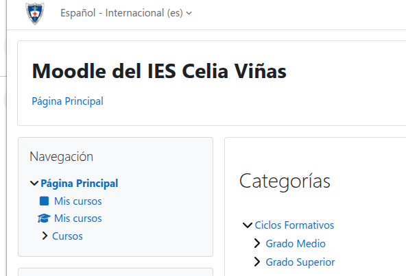
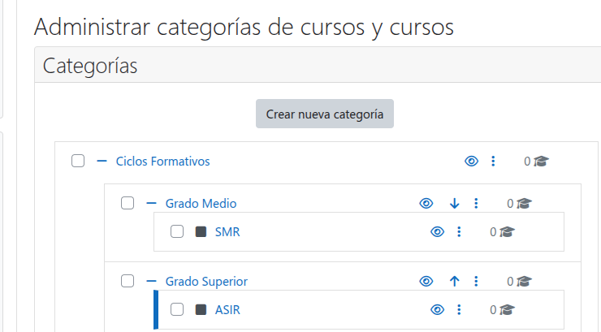
Creación de Cursos y Ajustes:
Crear un nuevo curso llamado "Administración Moodle Avanzada" y nombre corto AdminMoodAv. Este curso estará en la categoría Ciclos Formativos
Configure su formato como "Formato Semanal" con 5 secciones y visibilidad "Ocultar" (no será visible para el alumnado)
Establezca las fechas de inicio y fin del curso para un período de 3 meses a partir de hoy.
Establezca el límite de archivos subidos a 1MB.
Hacer una captura desde dentro del curso y que se os identifique
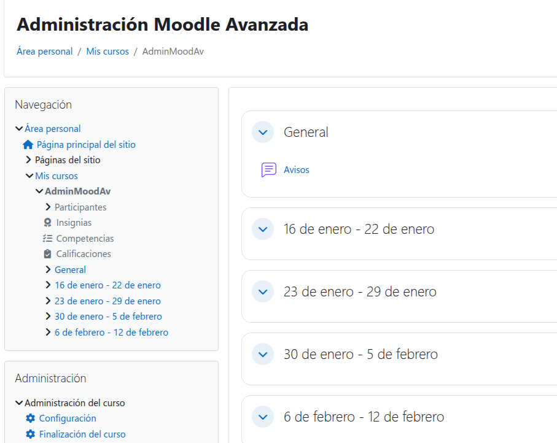
Matriculaciones:
Desde dentro del curso acceder al listado de usuarios matriculados.
Matricule manualmente a los usuarios creados anteriormente. El administrador tendrá rol de gestor, uno de los usuarios será profesor y el otro estudiante. Hacer una captura
Configure el método de "Auto-matriculación (Estudiante)" con una clave de acceso.
Habilite el "Acceso de invitado" al curso. Hacer una captura para que se verifique que los tres métodos están activados.
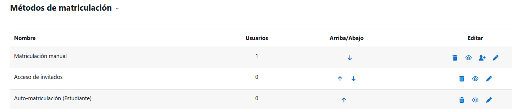
Incluya una breve explicación de la diferencia entre los tres métodos.
Finalización de Curso y Actividad:
En el curso "Administración Moodle Avanzada", configure la finalización de curso para que se complete solo cuando un estudiante obtenga una calificación de aprobado (5) y por fecha (dentro de tres meses). Se realiza en Administración del curso/Finalización del curso
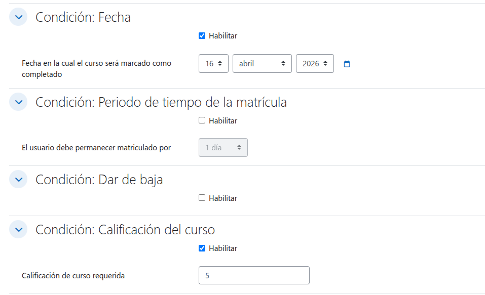
Añada una actividad de "Tarea" la primera semana del curso, modificando lo siguiente:
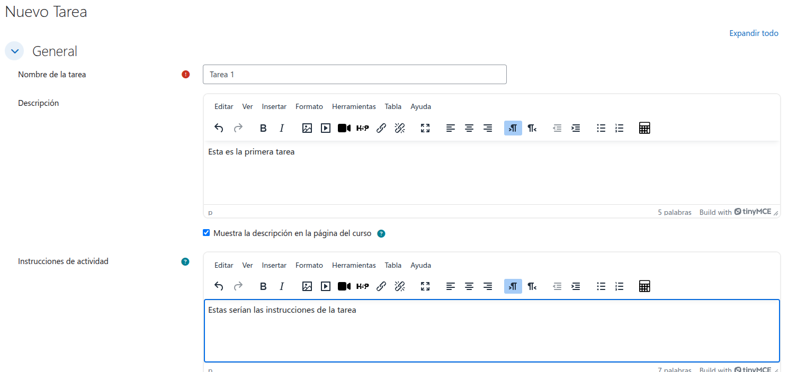
.Hacer una captura del curso donde se vea dicha tarea
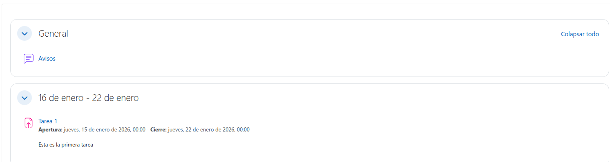
Bloques y Formatos :
Dentro del curso, cambie el formato de "Semanal" a "Secciones personalizadas”. Cambiar los nombres de las secciones por Unidad 1, Unidad 2,.... Hacer una captura.
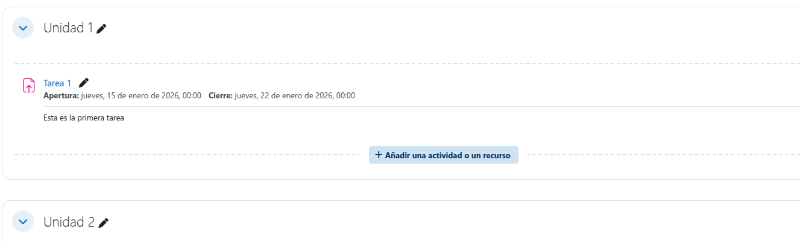
Añada el bloque de "Estado de finalización del curso".
Gestión de Plugins:
Investigue y descargue un plugin de actividad o bloque no esencial (Advanced URL).
Instale el plugin en la plataforma (mediante la interfaz web o de forma manual).
Incluya una captura del plugin instalado y activo.
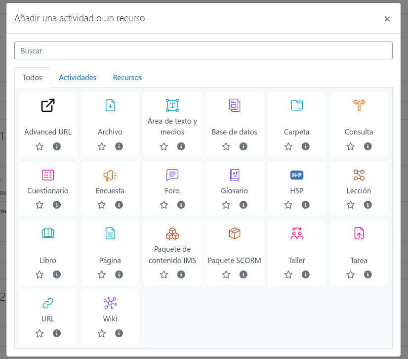
Copia de Seguridad y Restauración:
Vamos a configurar las copias de seguridad para que se hagan en el momento. En Administración del sitio/Cursos/Copias de seguridad/Copias de seguridad-Restauración asíncronos y desactivamos la opción Habilitar copias de seguridad asíncronas
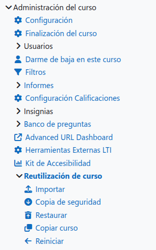
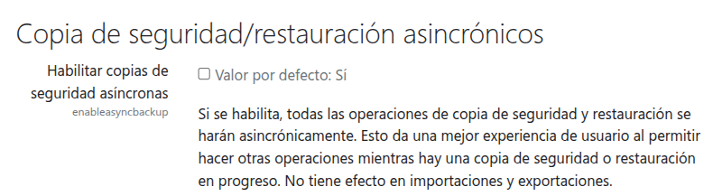
Realice una copia de seguridad completa del curso "Administración Moodle Avanzada", incluyendo usuarios matriculados. Nombre el archivo de copia de seguridad (ej. Backup_Avanzada.mbz).
Cree una nueva categoría temporal.
Restaure la copia de seguridad realizada en la categoría temporal, como un nuevo curso.
Incluya capturas del proceso de copia de seguridad y restauración.
4. CALIFICACIÓN ¶
⚠️ IMPORTANTE: El retraso en el plazo de entrega a través de la plataforma, la entrega del documento en formatos editables no permitidos (como .docx), capturas con identificación del alumno/a o la omisión de los enlaces de las fuentes documentales utilizadas penalizará gravemente la nota o invalidará la práctica.
| Apartado / Criterio | Muy Bien (100%) | Notable (75%) | Bien (50%) | Mejorable (30%) | Insuficiente (0%) | Peso |
|---|---|---|---|---|---|---|
| Contenido Técnico / Funcionalidad | Configuración completa y sin errores, demostrando la correcta implementación de la tarea. | Completo con errores menores/mínimos que no impiden el funcionamiento general de la plataforma. | Mayoría correcto, con algunos errores notables o partes que no funcionan, pero la base de la instalación es correcta. | Errores notables o faltan partes importantes de la instalación que impiden su funcionamiento. | No realizado o no cumple con los requisitos funcionales fundamentales. | 40% |
| Memoria y Documentación | Se incluyen todas las explicaciones, capturas solicitadas (identificadas claramente) y las respuestas a todas las preguntas de forma clara, concisa y completa, siguiendo la secuencia de pasos del documento. | Incluye la mayoría de las explicaciones, capturas y respuestas, siguiendo los pasos correctamente, con omisiones menores que no afectan la comprensión global de la tarea. | Pasos incompletos, faltan capturas importantes, o varias preguntas clave quedan sin responder/explicar. La documentación es insuficiente para el 40%. | Faltan partes importantes de la memoria, documentación pobre o la mayoría de preguntas/capturas/explicaciones están ausentes o son incorrectas. | No se entrega documentación, la información es inútil o no se ajusta a lo solicitado. | 50% |
| Presentación | Documento limpio, profesional y creativo. Sigue el formato (PDF) y cumple rigurosamente con todas las indicaciones de identificación. | Documento limpio, sigue el formato (PDF) y cumple las indicaciones de identificación solicitadas. | Desorganizado o sin formato adecuado (ej. no es PDF o le falta formato básico). | Desorganizado y difícil de leer. | Muy pobre o no trabajada. | 10% |